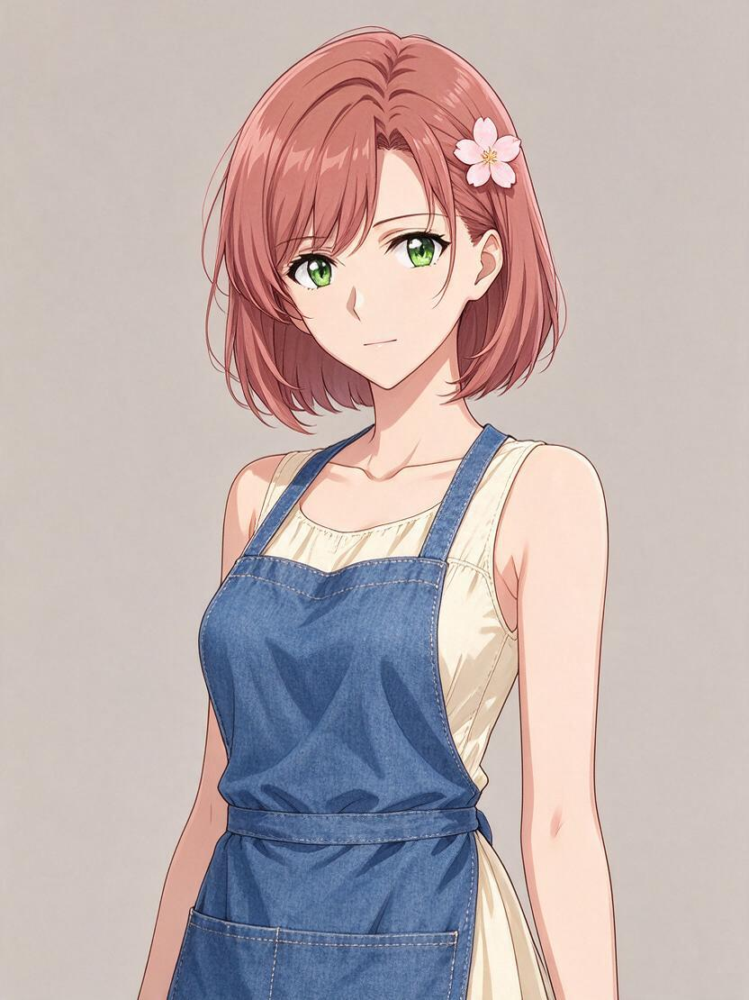
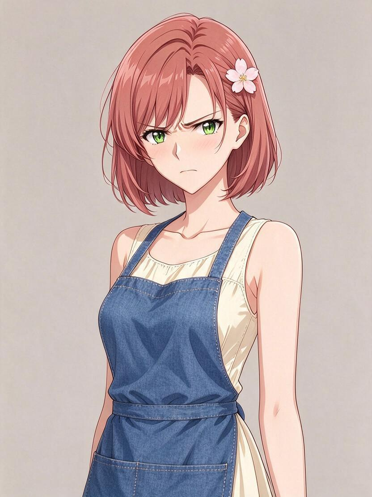
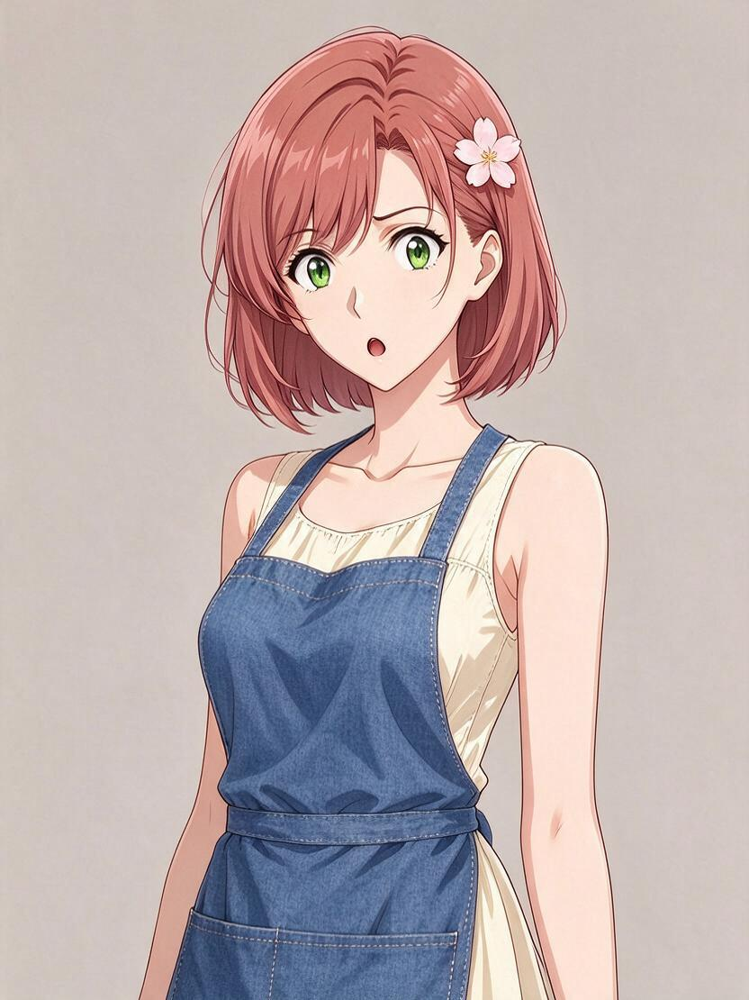
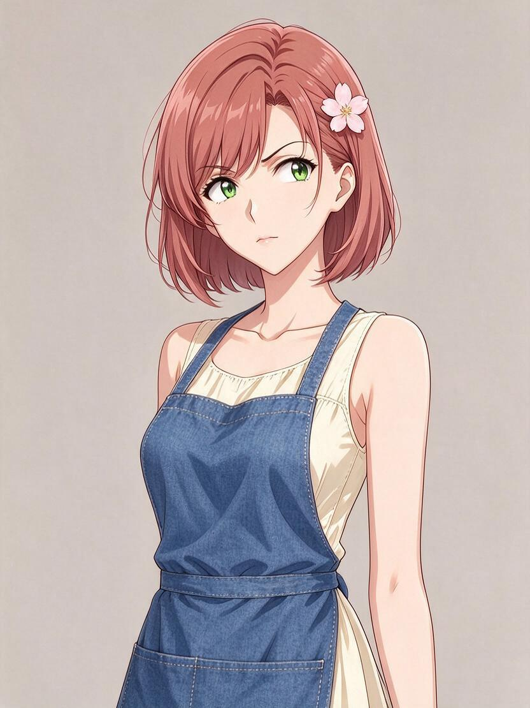
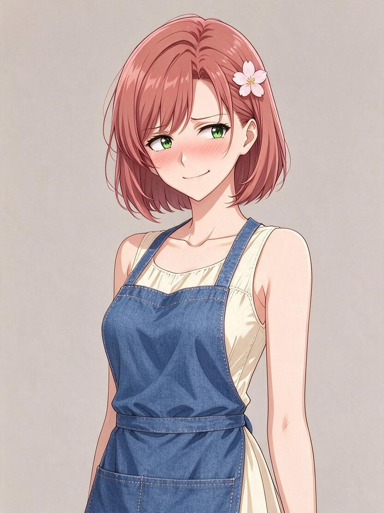
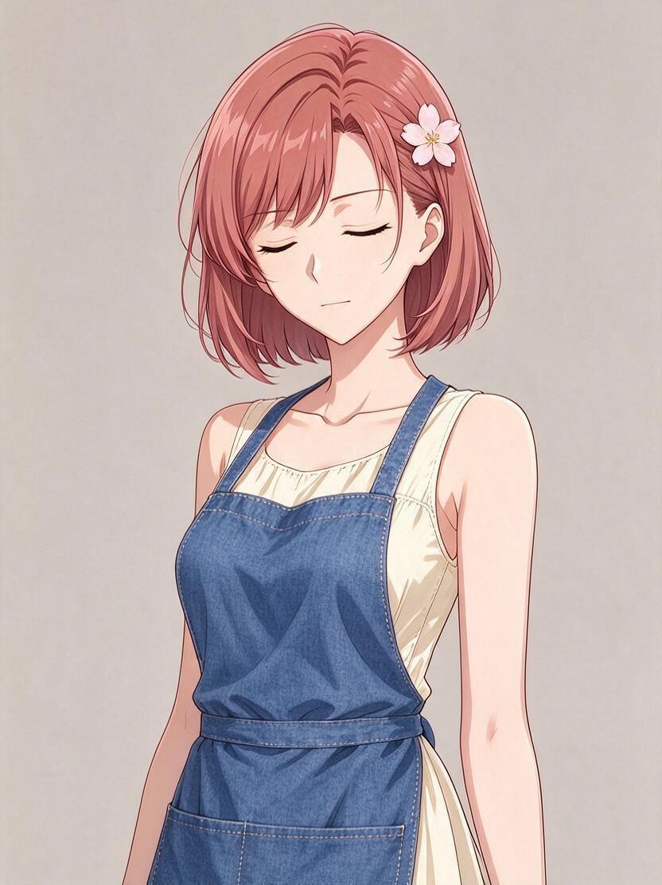

Hana Morisaki, a 26-year-old florist. Pink-tinted chestnut bob, green eyes, cherry-blossom hairpin. Denim apron over a cream sundress. Sunny, affectionate vibe.Spent $0.1440 of $0.60 · 2026-10-03T08:31:22.062Z





